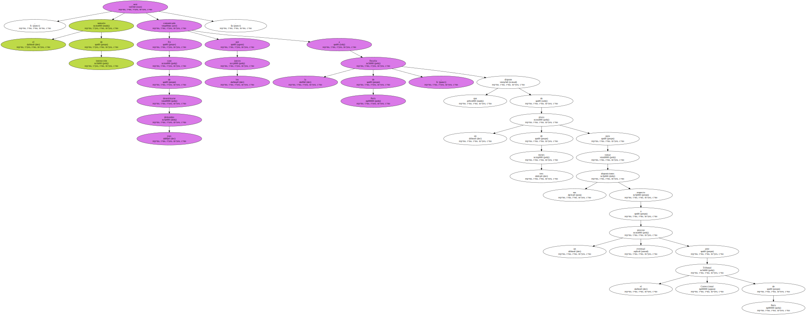
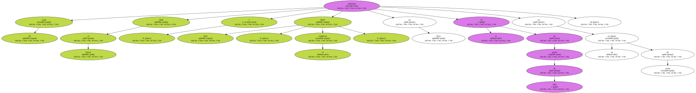
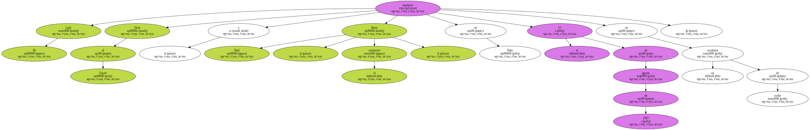

El Tribunal de Apelación de París se pronunciará mañana sobre las demandas presentadas por Al Fayed y la familia del chófer Henri Paul para que se lleve a cabo una investigación complementaria dentro del sumario sobre la muerte de Diana de Gales , quien hoy habría cumplido 38 años.

El Tribunal de Apelación de París se pronunciará mañana sobre las demandas presentadas por Al Fayed y la familia del chófer Henri Paul para que se lleve a cabo una investigación complementaria dentro del sumario sobre la muerte de Diana de Gales , quien hoy habría cumplido 38 años.
En caso de desestimarse esas demandas , el sumario de instrucción será comunicado por los jueces a la fiscalía de París , que dispone de un plazo de tres meses para tomar sus disposiciones respecto a un eventual proceso ante el Tribunal Correccional de París.
Lady Di , Dodi al Fayed y Henri Paul , el conductor , murieron en París el 31 de agosto de 1997 en un accidente de coche.
